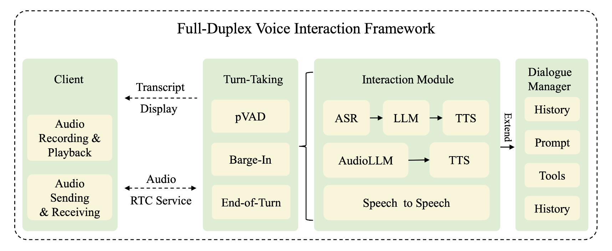
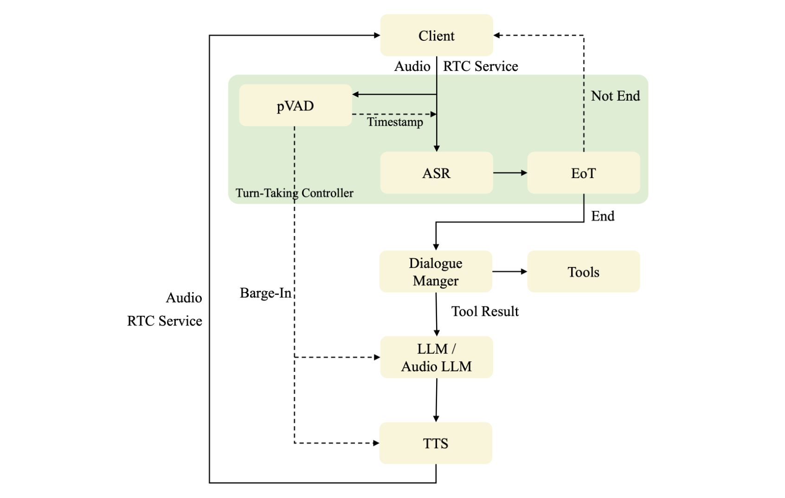
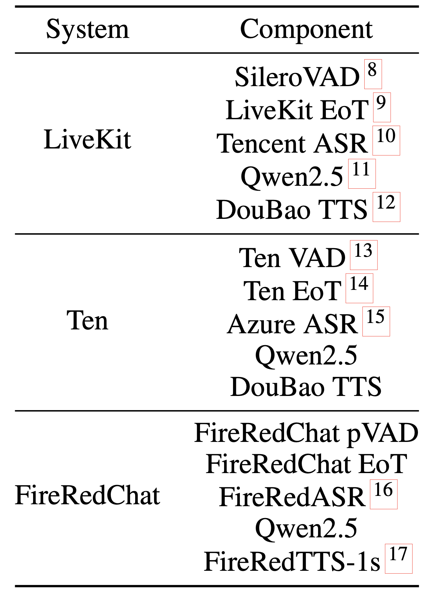
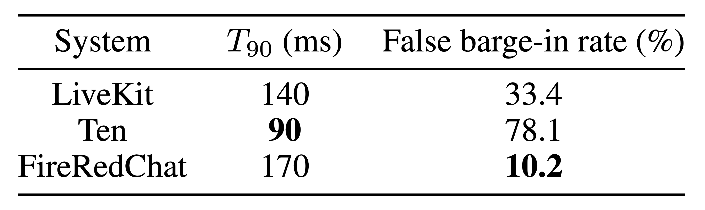
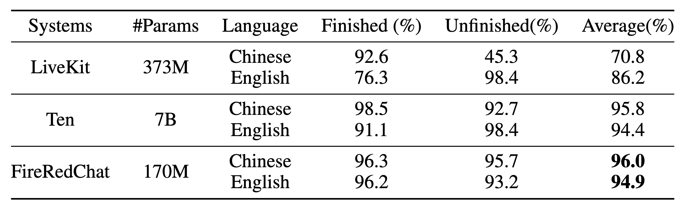

FireRedChat: A Pluggable, Full-Duplex Voice Interaction System with Cascaded and Semi-Cascaded Implementations
[Paper] [Code] [Try FireRedChat Online]Abstract. Full-duplex voice interaction allows users and agents to speak simultaneously with controllable barge-in, enabling lifelike assistants and customer service. Existing solutions are either end-to-end, difficult to design and hard to control, or modular pipelines governed by turn-taking controllers that ease upgrades and per-module optimization; however, prior modular frameworks depend on non-open components and external providers, limiting holistic optimization. In this work, we present a complete, practical full-duplex voice interaction system comprising a turn-taking controller, an interaction module, and a dialogue manager. The controller integrates streaming personalized VAD (pVAD) to suppress false barge-ins from noise and non-primary speakers, precisely timestamp primary-speaker segments, and explicitly enable primary-speaker barge-ins; a semantic end-of-turn detector improves stop decisions. It upgrades heterogeneous half-duplex pipelines, cascaded, semi-cascaded, and speech-to-speech, to full duplex. Using internal models, we implement cascaded and semi-cascaded variants; the semi-cascaded one captures emotional and paralinguistic cues, yields more coherent responses, lowers latency and error propagation, and improves robustness. A dialogue manager extends capabilities via tool invocation and context management. We also propose three system-level metrics, barge-in, end-of-turn detection accuracy, and end-to-end latency, to assess naturalness, control accuracy, and efficiency. Experiments show fewer false interruptions, more accurate semantic ends, and lower latency approaching industrial systems, enabling robust, natural, real-time full-duplex interaction.
Contents
Demo
System Overview

Figure 1. FireRedChat System Modules.
Workflow

Figure 3. FireRedChat Voice Interaction Flow.
Configurations Between Different Systems

Table 1. Configurations between different systems.
Barge-In Evaluation Results

Table 2. Barge-In evaluation results.
End-of-turn Detection Evaluation Results

Table 3. End-of-turn Detection evaluation results.
Latency of Different Systems
Table 4. Latency of different systems.